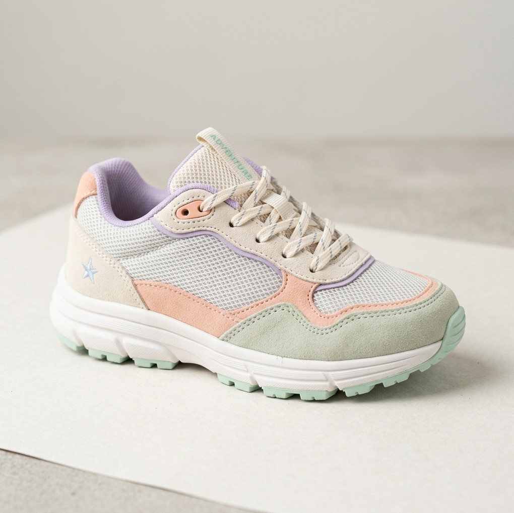
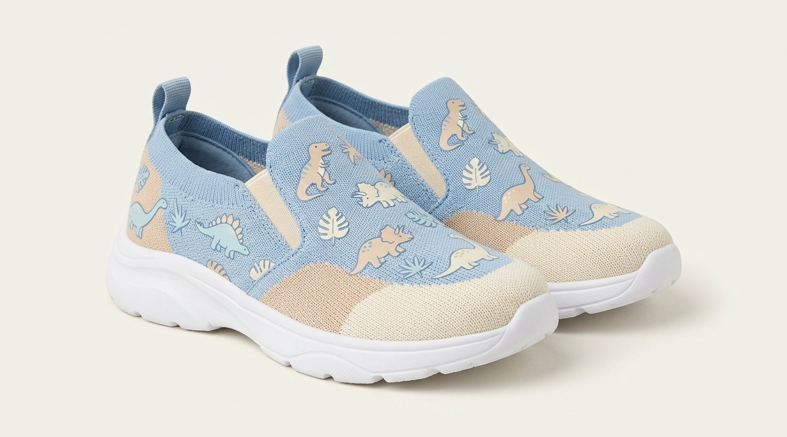
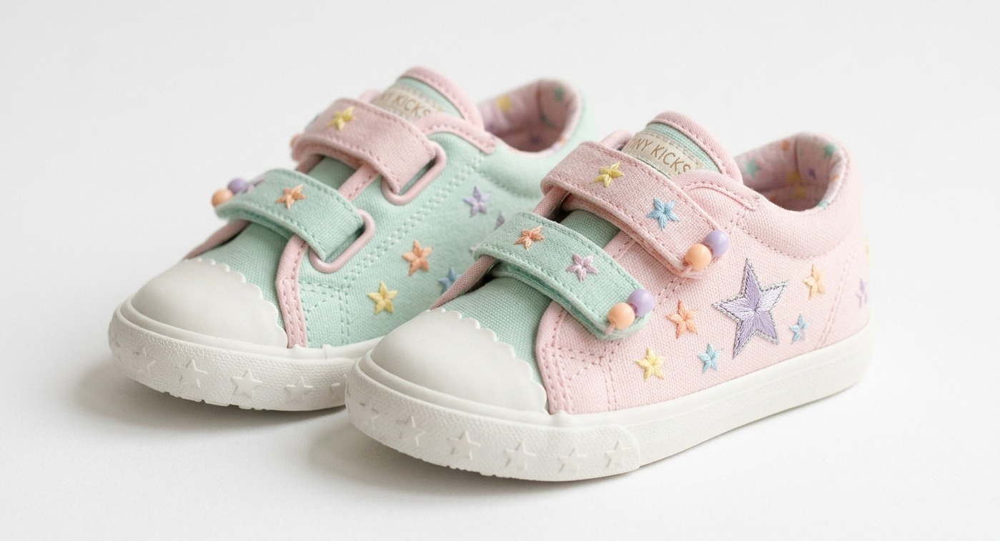
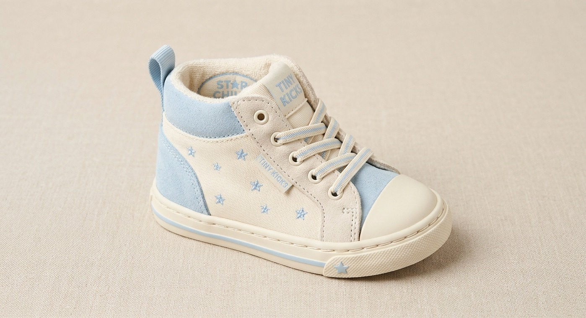

Para brincar
Conforto para acompanhar as brincadeiras e descobertas.
Diversão em cada passo
Modelos para acompanhar os pequenos em diferentes momentos do dia.

Conforto para acompanhar as brincadeiras e descobertas.

Opções para os passeios em família e momentos especiais.

Modelos para combinar com diferentes looks infantis.

Calçados para acompanhar a energia dos pequenos.
Escolha com carinho
Confira os modelos, as numerações, os preços e a disponibilidade no catálogo vigente da Kallan.